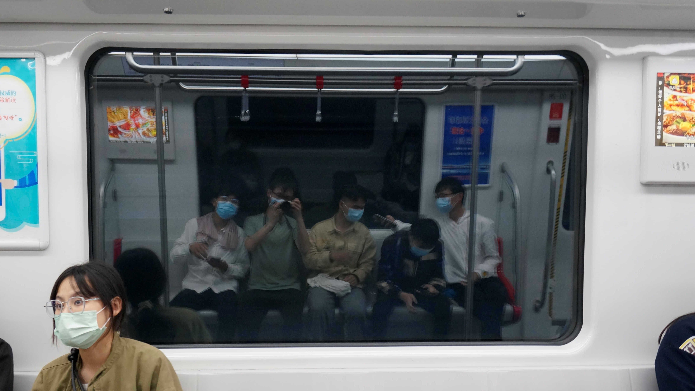

张嗣龙👦
安徽新华学院🏣
2019年09月 - 2022年06月
计算机应用技术 专科 大数据与人工智能学院🏫
homepage是一个个人静态主页，用来介绍我自己的~
messageWall是一个留言墙项目，使用servlet+jsp组合开发，是我学习servlet后的第一个项目，梦开始的地方
多人在线聊天室，使用socket进行通讯，使用servlet+Mybatis开发
这是我学习完 Spring、SpringMVC后开发的一个项目，使用SSM框架，目前还在开发中
homework-manager，即 作业管理（系统） 她可以在班级内部使用，对班级内部的作业进行管理；使用 后端使用 servlet、Mybatis、MySQL，前端使用 Layui；可以创建作业，修改作业，学生提交作业，撤回作业，对数据进行可视化统计；作业文件会上传到阿里云OSS进行云端存储；不同的用户权限可以有不同的操作权限；前后端分离，通过 json 进行通信
Captcha 是一个验证码生成的工具，可以很方便的生成验证码，所有的配置项都有默认值，开箱即用。
青志联
护校队
技能/证书及其他
在平时没课的时候，或者在寒暑假，就会去自学新的知识，当然，我已经树立了学习方向，主要是Javaweb方面，所以会去自学相关的知识；例如从2020年开始，在学JavaSE，然后是MySQL数据库，再就是JDBC连接数据库、Web前端，包括HTML、css、JavaScript、jquery、ajax，web后端，包括servlet和jsp；再往后就是git和Maven项目管理；，spring、springmvc框架开发应用，springboot快速搭建项目（学习中）
喜欢在学习的时候进行笔记的记录，到现在也记录了很多的笔记，都会分享在CSDN上
经常会拿着相机去拍一些照片，或者拿着手机随手记录
